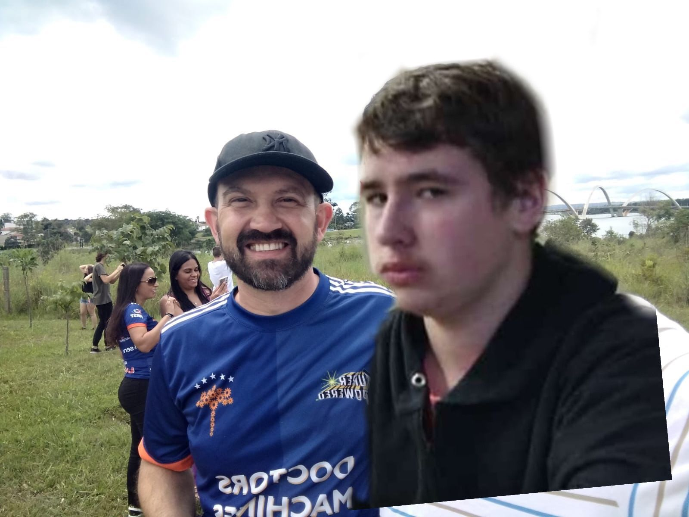

Galeria de memórias


Relatos de uma jornada da minha vida
Abril de 2022 - O Ensino Médio tinha acabado de começar... Um novo ciclo, novas amizades, ciclo social ampliado, novas matérias e professores que levarei pra vida toda (como o Mauro hahah). Essa foto retrata algumas pessoas que passaram pela minha vida e agregaram para aquele ano.
Setembro de 2022 - Essa era a época do ano que todo mundo varzeava e nem ligava mais, fim do ano mais próximo e cada vez mais chegando perto do Novo Ensino Médio. Foi uma das fases mais legais da minha vida escolar, muita bagunça e descobertas, e pessoas incriveis que levo no meu coração até hoje.
Fim de 2022 - Como eu havia dito, 2022 me deu muitas pessoas, inclusive um dos meus melhores amigos da época eu conheci lá. Sou muito grata à 2022 por ter me proporcionado pessoas, coisas inesquecíveis e momentos tão divertidos.
Início de 2023 - Logo que começou o Novo Ensino Médio, eu tive o previlégio de me aproximar da pessoa mais importante da minha vida... O Gabriel passou a ser a pessoa que mais estava do meu lado, me ajudando e me apoiando em meio tantas coisas...
Agosto de 2023 - De fato não posso reclamar do Novo Ensino Médio... Conheci tantas pessoas diferentes e legais(ou não, no caso do Miguel). As memórias irão ficar registradas na mente, o trio de ouro, os trabalhos com os cara da robótica que a gente odeia...
Outubro de 2023 - Simplesmente, numa feira de profissões da Positivo encontramos o Manel da Fúria!!! The best!! Nessa feira eu firmei que queria cursar a psicologia, o que futuramente se tornou meu maior sonho.
2024 - O tão esperado terceirão! Aqui começou as preocupações com o futuro mas ao mesmo tempo a sensação de viver o último ano escolar da VIDA.
Maio de 2024 - Ok. Não vamos comentar muito sobre essa, mas achei válido destacar ela.
Agosto de 2024 - Essa foto reflete o caos que está sendo nossos trabalhos do terceirão e o tanto que nos humilhamos para ganhar uma notinha...
Quase fim de 2024 - A real é que eu sou muito grata pela oportunidade de dividir o último ano na escola com vocês (alguns). Obrigada por marcarem uma parte da minha vida. Vou sentir falta disso tudo!
Queridos professores, Nesta jornada de aprendizado, vocês foram muito mais do que apenas educadores; foram guias, mentores e fontes de inspiração. Cada aula, cada palavra e cada gesto de apoio deixaram uma marca indelével em nossas vidas. Agradeço por sua paciência, dedicação e por acreditarem em nosso potencial, mesmo quando nós mesmos duvidávamos. As lições que vocês nos ensinaram vão além do conteúdo curricular; são ensinamentos que levaremos conosco para sempre. Obrigado por fazerem parte dessa etapa tão especial da minha vida!